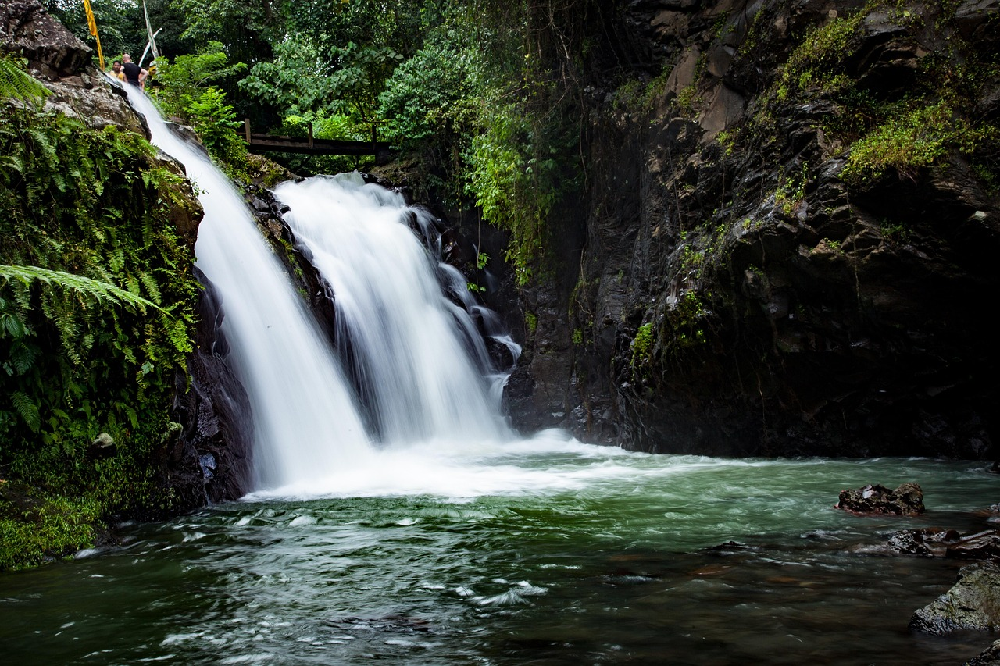

Las montañas nevadas al amanecer ofrecen una vista espectacular, donde la luz dorada baña las cumbres.

Los bosques en otoño se llenan de colores cálidos, creando una atmósfera mágica y acogedora.

El sol cayendo sobre el horizonte en la playa crea un reflejo dorado sobre el agua.

Las cascadas en medio de la selva transmiten una sensación de paz y conexión con la naturaleza.